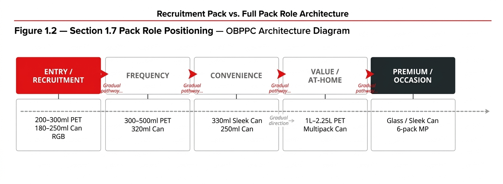

Chapter 03
Chapter 1 Strategic Foundation
Revenue growth in sparkling and non-alcoholic ready-to-drink (NARTD) categories is driven by two distinct but complementary mechanisms. The first is retention: protecting and deepening value with existing consumers through frequency, occasion breadth, and portfolio premiumization. The second is recruitment: expanding the consumer base by bringing in new or lapsed buyers who are currently outside the system due to price, pack format, or occasion barriers.

Playbook Chapter
Chapter 1 Strategic Foundation
1.1 The Two-Engine Growth Model
Revenue growth in sparkling and non-alcoholic ready-to-drink (NARTD) categories is driven by two distinct but complementary mechanisms. The first is retention: protecting and deepening value with existing consumers through frequency, occasion breadth, and portfolio premiumization. The second is recruitment: expanding the consumer base by bringing in new or lapsed buyers who are currently outside the system due to price, pack format, or occasion barriers.
This Playbook focuses on the recruitment engine — specifically the role of Recruitment and Affordability Packs in expanding the consumer base and protecting volume during periods of affordability pressure. However, every pack decision described here must be evaluated in the context of its impact on the full portfolio and the premiumization agenda.
Europe provides a clear illustration of this dual imperative. In markets such as Spain and Greece, the system demonstrated that a "surgical and both-and" approach — protecting heavy buyers with upsized packs while simultaneously recruiting medium and light buyers through entry formats — delivered measurably superior results to either strategy deployed in isolation. The framework described in this chapter governs how that balance is achieved at the market level.
1.2 OBPPC and Pack Role Architecture
Recruitment and Affordability Packs do not exist in isolation. They are nodes within a broader OBPPC architecture that assigns a distinct strategic role to every pack in the portfolio.
Pack Role | Strategic Intent | Primary Metric | Pricing Logic |
|---|---|---|---|
Entry / Recruitment Pack | Acquire new consumers; lower the trial barrier through price or portion | Incremental transactions; penetration uplift among new buyers | Price anchored to Entry Price Point (EPP) and DDI benchmark; Magic Price Point preferred |
Frequency Pack | Drive repeat purchase by existing light-to-medium buyers; grow occasions | Transaction frequency; volume per buyer | Indexed to competitive field; value vs. per-liter price |
Convenience Pack | Serve on-the-go, single-serve, impulse occasions; maximize cold availability | Ice-cold availability; outlet compliance; impulse conversion rate | Premium over at-home equivalent; occasion justified |
Value / Bulk Pack | Capture at-home, stock-up occasions; protect heavy buyers; compete on per-liter value | Household penetration; at-home share; per-liter price competitiveness | Low absolute price per liter; affordability anchor for heavy buyers |
Premium / Occasion Pack | Premiumize; build brand equity; capture high-value occasions (gifting, dining, celebration) | NSR per case; category value share; brand equity score | Premium positioning; differentiated pack architecture (e.g., sleek can, glass) |
1.3 The OBPPC Logic Tree
1.4 Recruitment Pack vs. Affordability Pack — Critical Distinction
The most common strategic error in pack deployment is conflating Recruitment and Affordability objectives. The two are related but fundamentally different in intent, target consumer, and success criteria. Treating them as interchangeable leads to misdirected investment and misread results.
Dimension | Recruitment Pack | Affordability Pack |
|---|---|---|
Primary objective | Acquire new consumers into the brand or category | Retain existing consumers under affordability pressure |
Target consumer | Non-buyers or lapsed buyers; light category users | Existing buyers at risk of trading down or exiting |
Core barrier addressed | Trial barrier: price or portion too large for first purchase | Ongoing access barrier: regular pack no longer affordable |
Pack design starting point | Entry transaction price; smallest viable serve | Existing consumer behavior; acceptable downsize without devaluing brand |
Primary success metric | Incremental transactions; penetration growth among new buyers; cannibalization rate below threshold | Volume retention; heavy buyer protection; transaction frequency maintenance |
Cannibalization expectation | Low (targeting non-buyers); closely monitored; threshold set pre-launch | Moderate (replacing existing pack); modelled and accepted as structural shift |
Margin posture | Acceptable lower gross margin per unit if system economics positive at scale | Margin maintained or improved through pack resizing or cost optimization |
Channel priority | Traditional trade, convenience, channels where new consumers shop | All channels; prioritize channels where heavy buyers over-index |
Measurement horizon | 6–12 months: incremental buyer acquisition rate | 3–6 months: volume retention; 12–18 months: NSR mix impact |
1.5 Do / Do Not Reference Table
Do | Do Not |
|---|---|
Start pack design from target transaction price (EPP), then work back to optimal pack format and size. | Start from existing pack formats and apply a discount. This generates affordability without genuine entry-point innovation. |
Validate the DDI benchmark in-market before setting the EPP. DDI thresholds vary significantly between market contexts (e.g., urban vs. rural; GT vs. MT). | Apply a global DDI threshold without local calibration. What is affordable in Karachi is not affordable in Ho Chi Minh City. |
Model cannibalization explicitly before launch approval. Set a threshold. Monitor against it in the first 90 days. | Assume cannibalization will be negligible. In most markets, 20–40% of recruitment pack volume is drawn from adjacent existing packs. This must be quantified. |
Assign the pack a single role. Brief the entire commercial team on that role so execution is consistent. | Let the pack "drift" between roles. Entry packs placed in premium cooler bays, or priced above the EPP at outlet level, lose their recruitment function. |
Size the opportunity against realistic incremental volume — not total category volume. Penetration headroom and channel reach are the binding constraints. | Project recruitment pack volume as a percentage of total category size without channel-by-channel build-up. These projections are consistently overstated. |
Define exit criteria before launch. If the pack does not meet recruitment thresholds within the pilot window, have a pre-agreed response: fix, pivot, or exit. | Allow a failing pack to persist without diagnosis. The most costly outcome is a pack that creates margin dilution without incremental consumer value. |
Integrate the recruitment pack into the full OBPPC architecture. Ensure it does not cannibalize your frequency anchor pack. | Launch a recruitment pack in isolation from the portfolio. Consumer and trade confusion results when pricing logic is not coherent across pack sizes. |
1.6 The Revenue Growth & Margin Expansion (RGMX) Context
The Coca-Cola system is in active transition from RGM 1.0 (revenue growth) to RGMX (revenue growth and margin expansion). This evolution has direct implications for how Recruitment and Affordability Packs are evaluated and approved.
Under RGM 1.0, a pack that grew volume and market share was often approved regardless of its gross margin contribution. Under RGMX, margin expansion is an explicit co-equal objective alongside revenue growth. Recruitment packs must therefore demonstrate not just incremental volume, but a credible path to positive system economics — taking into account the full value chain from production cost through customer margin to consumer price.
Dimension | RGM 1.0 Lens | RGMX Lens |
|---|---|---|
Pack approval criterion | Volume and market share accretive | Volume AND margin accretive; system economics positive |
Cannibalization tolerance | Accepted if net volume is positive | Cannibalization must not disproportionately erode mix; NSR per case benchmark applies |
Consumer insight weight | Important but secondary to trade and volume | Equal weight; consumer occasion and penetration data drive pack design |
Cross-functional integration | RGM-led with Finance sign-off | Cross-functional from day one: Marketing, Finance, Supply Chain, Customer, Bottler |
Measurement cadence | Annual review | Leading indicators at 30/60/90 days; rapid optimization loop |
The practical implication: in the RGMX era, a Recruitment Pack that grows transactions but destroys system margin is not a success. The business case must close at the system level, not just at the consumer or trade level.
1.7 Pack Role Positioning — OBPPC Architecture Diagram

1.8 Key Assumptions and Risk Flags
Key Assumption: This Playbook assumes that market RGM teams have access to Nielsen or equivalent panel data covering category penetration, price-pack elasticity, and channel-level share. Where this data is unavailable, proxy methods are described in Chapter 2. However, pack decisions made without penetration data carry elevated risk of over-projecting incremental volume.
Risk: The global affordability context is shifting rapidly in 2025–2026. Inflation in key Swire Coca-Cola markets (Vietnam, Cambodia, Thailand) has compressed consumer discretionary income and elevated the relative cost of existing entry packs. DDI benchmarks and Magic Price Points must be recalibrated annually. Playbook users should not apply DDI thresholds from prior years without verification.